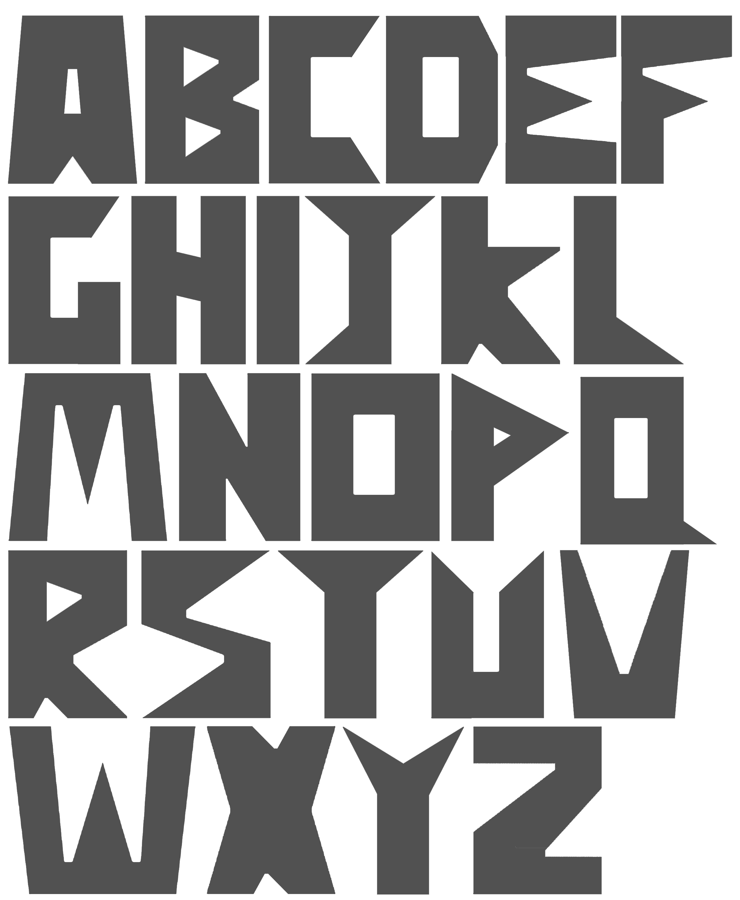
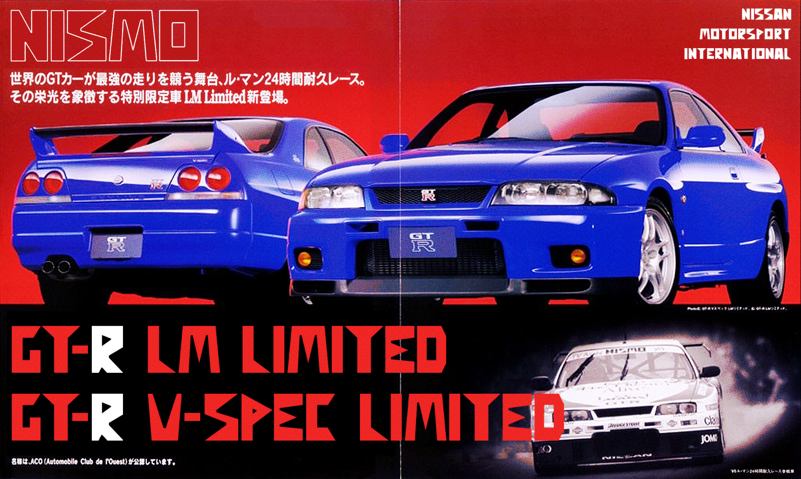

Nismo Typeface.
Semester 2, 2025.
The NISMO old/mid logo (abbreviation of NISsan MOtorsports) was used by Nissan from 1984 till the mid 1990s. Being the motorsport branch of Nissan Corporation, NISMO was in charge of research for Nissan’s race cars across multiple mediums, as well as development of performance oriented parts sold directly to consumers. Technological advancements from their motorsport success was used to improve Nissan production cars. There’s no reference to the designer of the logo, however it was likely made by an in-house design team at Nissan, under the guidance of NISMO’s first brand president Yasuharu Namba. The logo was used for multiple applications - store signage, liveries for motorsport, advertising, merchandise and on the cars/parts themselves.
The logo type is characterised by bold, geometric forms with triangular accents. When examined closely, the logo doesn’t really follow any grids. Spacing and stroke widths are also inconsistent, making for an awkward and imperfect type. No complete NISMO typeface exists, so I tasked myself with making it. This was a fun challenge as only a few small details and five letters exist to base the entire alphabet on. After a bit of physical experimentation with scissors and paper and a rough sketch of what I think it might look like, I made an arrangement of shapes to build the full NISMO typeface.

